在本项工作中，我们介绍 Qwen3，即 Qwen 模型家族的最新版本。 Qwen3 由一系列 LLM 组成，旨在提升性能、效率和多语言能力。 Qwen3 系列包括采用稠密架构和 MoE 架构的模型，参数规模从 6 亿到 2350 亿不等。 Qwen3 的一项关键创新是将思考模式（用于复杂的、多步骤推理）与非思考模式（用于快速的、由上下文驱动的响应）整合到一个统一框架中。 这消除了在不同模型之间切换的需要，例如针对聊天优化的模型（如 GPT-4o）和专门的推理模型（如 QwQ-32B），并支持根据用户查询或聊天模板动态切换模式。 与此同时，Qwen3 引入了一种思考预算机制，允许用户在推理期间自适应地分配计算资源，从而根据任务复杂度在延迟与性能之间取得平衡。 此外，通过利用旗舰模型的知识，我们显著减少了构建较小规模模型所需的计算资源，同时确保这些模型具有很强的性能竞争力。 实证评估表明，Qwen3 在多种基准测试中取得了当前最先进的结果，包括代码生成、数学推理、agent 任务等，能够与更大的 MoE 模型和专有模型竞争。 与其前代 Qwen2.5 相比，Qwen3 将多语言支持从 29 种扩展到 119 种语言和方言，通过改进跨语言理解和生成能力，提高了全球用户的可用性。 为促进可复现性以及由社区推动的研究与开发，所有 Qwen3 模型均以 Apache 2.0 许可证公开提供。
长期以来，追求 AGI 或人工超级智能（ASI）一直是人类的目标。近年来，大型基础模型取得的进展，例如 GPT-4o（OpenAI, 2024）、Claude 3.7（Anthropic, 2025）、Gemini 2.5（DeepMind, 2025）、DeepSeek-V3（Liu et al., 2024a）、Llama-4（Meta-AI, 2025）和 Qwen2.5（Yang et al., 2024b），表明我们正朝着这一目标取得显著进步。这些模型使用覆盖不同领域和任务、包含数万亿 token 的庞大数据集进行训练，有效地将人类的知识与能力蒸馏到其参数中。此外，近期通过强化学习优化的推理模型的发展，凸显了基础模型增强推理时扩展能力并达到更高智能水平的潜力，例如 o3（OpenAI, 2025）和 DeepSeek-R1（Guo et al., 2025）。尽管大多数最先进的模型仍属于专有模型，但开源社区的快速发展已经大幅缩小了开放权重模型与闭源模型之间的性能差距。值得注意的是，越来越多的顶尖模型（Meta-AI, 2025; Liu et al., 2024a; Guo et al., 2025; Yang et al., 2024b）如今以开源形式发布，推动了人工智能领域更广泛的研究与创新。
在本项工作中，我们介绍 Qwen3，即我们的基础模型家族 Qwen 中的最新系列。Qwen3 是一组开放权重的 LLM，在多种任务和领域中达到当前最先进的性能。我们发布了稠密模型和 MoE 模型，参数数量从 6 亿到 2350 亿不等，以满足不同下游应用的需求。值得注意的是，旗舰模型 Qwen3-235B-A22B 是一个 MoE 模型，总参数数量为 2350 亿，每个 token 激活的参数数量为 220 亿。这一设计兼顾了高性能与高效推理。
Qwen3 引入了多项关键改进，以增强其功能和易用性。首先，它将思考模式和非思考模式这两种不同的运行模式整合到单个模型中。这使用户能够在两种模式之间切换，而无需在不同模型之间交替使用，例如从 Qwen2.5 切换到 QwQ（Qwen Team, 2024）。这种灵活性确保开发者和用户可以高效地调整模型行为，以适应具体任务。此外，Qwen3 引入了思考预算，使用户能够细粒度地控制模型在执行任务时投入的推理力度。这一能力对于优化计算资源和性能至关重要，可以调整模型的思考行为，以适应现实应用中不同的复杂度。此外，Qwen3 已在覆盖多达 119 种语言和方言的 36 万亿 token 上进行预训练，有效增强了其多语言能力。这种更广泛的语言支持提高了它在全球使用场景和国际应用中的部署潜力。这些进步共同确立了 Qwen3 作为前沿开源 LLM 家族的地位，使其能够有效处理不同领域和语言中的复杂任务。
Qwen3 的预训练过程使用了一个包含约 36 万亿 token 的大规模数据集，该数据集经过筛选整理，以确保语言和领域的多样性。为高效扩充训练数据，我们采用了一种多模态方法：对 Qwen2.5-VL（Bai et al., 2025）进行微调，以从大量 PDF 文档中提取文本。我们还使用领域专用模型生成合成数据：使用 Qwen2.5-Math（Yang et al., 2024c）生成数学内容，使用 Qwen2.5-Coder（Hui et al., 2024）生成代码相关数据。预训练过程采用三阶段策略。在第一阶段，模型在约 30 万亿 token 上进行训练，以建立坚实的通用知识基础。在第二阶段，模型进一步在知识密集型数据上进行训练，以增强科学、技术、工程和数学（STEM）以及代码等领域的推理能力。最后，在第三阶段，模型在长上下文数据上进行训练，将其最大上下文长度从 4,096 个 token 增加到 32,768 个 token。
为使基础模型更好地与人类偏好和下游应用对齐，我们采用了一种多阶段后训练方法，同时赋予模型思考（推理）模式和非思考模式。在前两个阶段，我们通过长 CoT 冷启动微调以及聚焦数学和代码任务的强化学习，着重培养强大的推理能力。在最后两个阶段，我们将包含推理路径和不包含推理路径的数据合并为一个统一的数据集，进行进一步微调，使模型能够有效处理这两类输入；随后，我们应用通用领域强化学习，提高模型在广泛下游任务中的性能。对于较小的模型，我们使用强到弱蒸馏，利用来自较大模型的 off-policy 和 on-policy 知识迁移，增强其能力。从先进教师模型进行蒸馏，在性能和训练效率方面均显著优于强化学习。
我们在一组覆盖多种任务和领域的全面基准测试上，对模型的预训练版本和后训练版本都进行了评估。实验结果表明，我们的预训练基础模型达到当前最先进的性能。后训练模型无论处于思考模式还是非思考模式，都能与领先的专有模型和大型 MoE 模型竞争，例如 o1、o3-mini 和 DeepSeek-V3。值得注意的是，我们的模型在代码、数学和 agent 相关任务中表现出色。例如，旗舰模型 Qwen3-235B-A22B 在 AIME’24 上取得 85.7 分，
在 AIME’25（AIME, 2025）上取得 81.5 分，在 LiveCodeBench v5（Jain et al., 2024）上取得 70.7 分，在 CodeForces 上取得 2,056 分，在 BFCL v3（Yan et al., 2024）上取得 70.8 分。此外，Qwen3 系列中的其他模型，相对于其规模，也表现出强劲的性能。进一步地，我们观察到，提高用于思考 token 的思考预算，会使模型在各种任务中的性能持续提升。
在以下各节中，我们将介绍模型架构的设计，提供训练过程的详细信息，展示预训练和后训练模型的实验结果，最后通过总结关键发现并概述未来研究的潜在方向，结束本技术报告。
Qwen3 系列包括 6 个稠密模型，即 Qwen3-0.6B、Qwen3-1.7B、Qwen3-4B、Qwen3-8B、Qwen3-14B 和 Qwen3-32B，以及 2 个 MoE 模型，即 Qwen3-30B-A3B 和 Qwen3-235B-A22B。旗舰模型 Qwen3-235B-A22B 的总参数数量为 2350 亿，激活参数数量为 220 亿。下面，我们将详细介绍 Qwen3 模型的架构。
Qwen3 稠密模型的架构与 Qwen2.5（Yang et al., 2024b）类似，包括使用 GQA（Ainslie et al.，2023）、SwiGLU（Dauphin et al., 2017）、RoPE（Su et al.，2024），以及采用预归一化的 RMSNorm（Jiang et al., 2023）。此外，我们移除了 Qwen2（Yang et al., 2024a）中使用的 QKV-bias，并在 attention 机制中引入 QK-Norm（Dehghani et al., 2023），以确保 Qwen3 的训练稳定。表 1 提供了模型架构的关键信息。
Qwen3 MoE 模型与 Qwen3 稠密模型采用相同的基础架构。表 2 提供了模型架构的关键信息。我们沿用 Qwen2.5-MoE（Yang et al., 2024b），实现细粒度专家划分（Dai et al., 2024）。Qwen3 MoE 模型共有 128 个专家，每个 token 激活 8 个专家。与 Qwen2.5-MoE 不同，Qwen3-MoE 的设计不包含共享专家。此外，我们采用全局 batch 负载均衡损失（Qiu et al., 2025），以鼓励专家专门化。这些架构和训练方面的创新，显著提高了模型在下游任务中的性能。
Qwen3 模型使用 Qwen 的 tokenizer（Bai et al., 2023），该 tokenizer 采用字节级 BPE（BBPE, Brown et al., 2020; Wang et al., 2020; Sennrich et al., 2016），词表大小为 151,669。
本节介绍预训练数据的构建、预训练方法的细节，并展示在标准基准测试上评估基础模型的实验结果。
与 Qwen2.5（Yang et al., 2024b）相比，我们显著扩大了训练数据的规模和多样性。具体而言，我们收集的预训练 token 数量达到原来的两倍，覆盖的语言数量达到原来的三倍。所有 Qwen3 模型均在一个包含 119 种语言和方言、总计 36 万亿 token 的庞大且多样的数据集上进行训练。该数据集包含各类领域的高质量内容，
（本句接第 4 页）
例如代码、STEM（科学、技术、工程和数学）、推理任务、书籍、多语言文本和合成数据。
为进一步扩充预训练数据语料库，我们首先使用 Qwen2.5-VL 模型（Bai et al., 2025）对大量 PDF 类文档进行文本识别。随后使用 Qwen2.5 模型（Yang et al., 2024b）对识别出的文本进行精修，以提高其质量。通过这一两步流程，我们得以额外获得总计数万亿个高质量文本 token。此外，我们使用 Qwen2.5（Yang et al., 2024b）、Qwen2.5-Math（Yang et al., 2024c）和 Qwen2.5-Coder（Hui et al., 2024）模型，以教科书、问答、指令和代码片段等不同格式合成数万亿个文本 token，覆盖数十个领域。最后，我们通过纳入更多多语言数据并引入更多语言，进一步扩充预训练语料库。与 Qwen2.5 使用的预训练数据相比，支持的语言数量从 29 种显著增加到 119 种，增强了模型的语言覆盖范围和跨语言能力。
我们开发了一个多语言数据标注系统，旨在同时提高训练数据的质量与多样性。该系统已应用于我们的大规模预训练数据集，在教育价值、学科、领域和安全性等多个维度上标注了超过 30 万亿个 token。这些详细标注支持更有效的数据筛选和组合。以往研究（Xie et al., 2023; Fan et al., 2023; Liu et al., 2024b）在数据来源或领域层面优化数据混合，而我们的方法利用细粒度数据标签，通过在小型代理模型上开展大量消融实验，在样本层面优化数据混合。
Qwen3 模型通过以下三个阶段进行预训练：
与 Qwen2.5（Yang et al., 2024b）类似，我们基于上述三个预训练阶段，建立了用于预测最优超参数（例如学习率调度器和 batch 大小）的 scaling laws。通过大量实验，我们系统研究了模型架构、训练数据、训练阶段与最优训练超参数之间的关系。最后，我们为每个稠密模型或 MoE 模型设置预测得到的最优学习率和 batch 大小策略。
我们对 Qwen3 系列的基础语言模型进行了全面评估。基础模型的评估主要关注其在通用知识、推理、数学、科学知识、代码和多语言能力方面的表现。预训练基础模型的评估数据集包括 15 个基准测试：
对于基础模型的基线，我们根据参数规模，将 Qwen3 系列基础模型与 Qwen2.5 基础模型（Yang et al., 2024b）以及其他领先的开源基础模型进行比较，包括 DeepSeek-V3 Base（Liu et al., 2024a）、Gemma-3（Team et al., 2025）、Llama-3（Dubey et al., 2024）和 Llama-4（Meta-AI, 2025）系列基础模型。所有模型均使用相同的评估流程和广泛使用的评估设置进行评估，以确保公平比较。
根据整体评估结果，我们强调 Qwen3 基础模型的以下几个关键结论。
详细结果如下。
我们将 Qwen3-235B-A22B-Base 与此前规模相近的 MoE 模型 Qwen2.5-Plus-Base（Yang et al., 2024b），以及其他领先的开源基础模型进行比较：Llama-4-Maverick（Meta-AI, 2025）、Qwen2.5-72B-Base（Yang et al., 2024b）和 DeepSeek-V3 Base（Liu et al., 2024a）。从表 3 的结果来看，Qwen3-235B-A22B-Base 模型在所评估的大多数基准测试中取得了最高性能得分。我们进一步分别将 Qwen3-235B-A22B-Base 与其他基线比较，以进行详细分析。
Qwen3-32B-Base 是 Qwen3 系列中最大的稠密模型。我们将其与规模相近的基线进行比较，包括 Gemma-3-27B（Team et al., 2025）和 Qwen2.5-32B（Yang et al., 2024b）。此外，我们引入了两个强基线：最近开源的 MoE 模型 Llama-4-Scout，其参数数量是 Qwen3-32B-Base 的三倍，但激活参数只有其一半；
（本句接第 9 页；第 6–8 页为结果表）
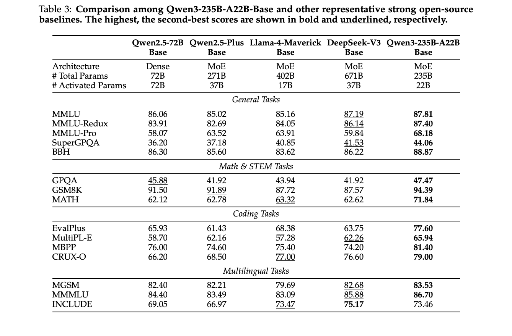
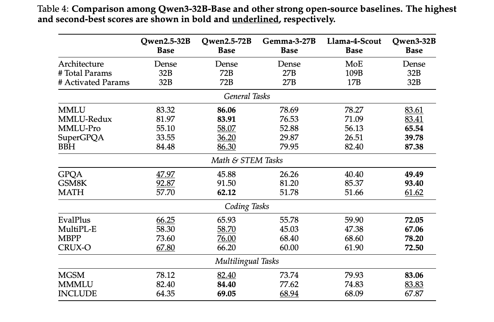
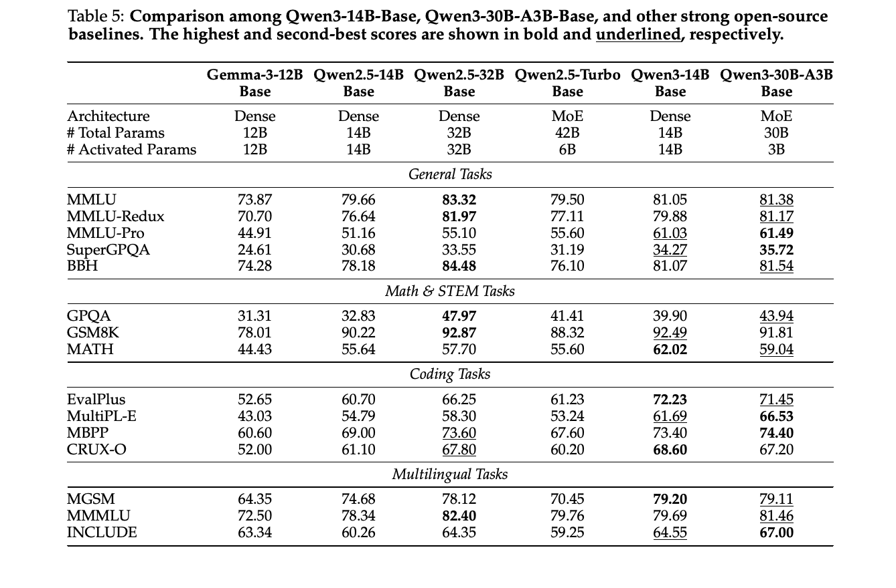
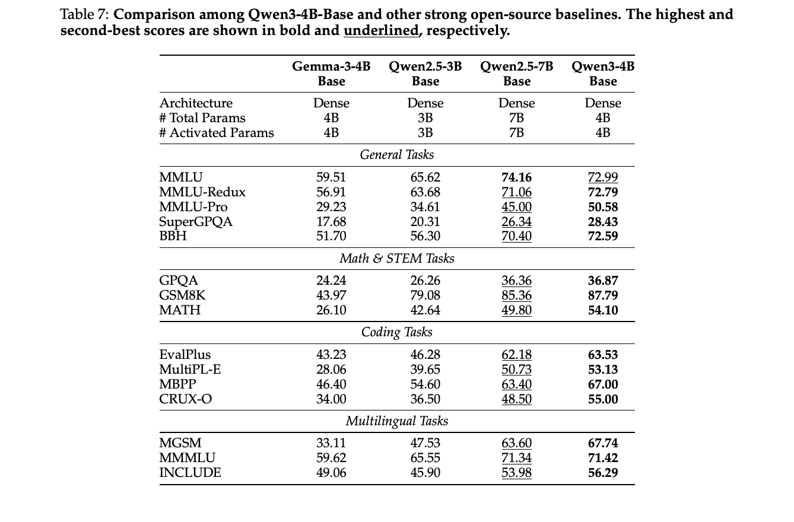
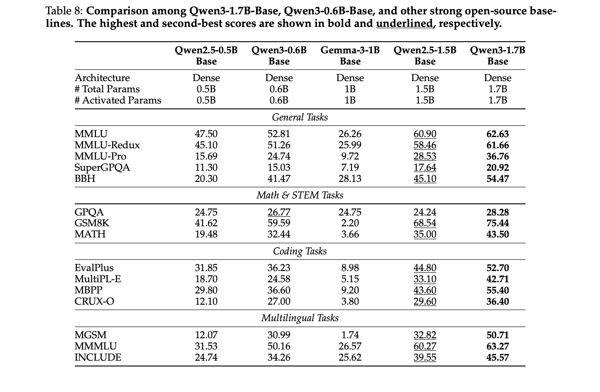
以及我们此前的旗舰开源稠密模型 Qwen2.5-72B-Base，其参数数量是 Qwen3-32B-Base 的两倍以上。结果如表 4 所示，支持以下三个关键结论：
我们将 Qwen3-14B-Base 和 Qwen3-30B-A3B-Base 的评估结果与规模相近的基线进行比较，包括 Gemma-3-12B Base 和 Qwen2.5-14B Base。同样，我们还引入了两个强基线：（1）Qwen2.5-Turbo（Yang et al., 2024b），具有 420 亿个参数和 60 亿个激活参数。注意，其激活参数数量是 Qwen3-30B-A3B-Base 的两倍。（2）Qwen2.5-32B-Base，其激活参数数量是 Qwen3-30B-A3B 的 11 倍，并且是 Qwen3-14B 的两倍以上。结果如表 5 所示，我们可以得出以下结论。
对于端侧模型，我们采用规模相近的 Qwen2.5、Llama-3 和 Gemma-3 基础模型作为基线。结果见表 6、表 7 和表 8。所有 Qwen3 8B / 4B / 1.7B / 0.6B-Base 模型在几乎所有基准测试中都持续保持强劲的性能。值得注意的是，Qwen3-8B / 4B / 1.7B-Base 模型甚至在超过一半的基准测试中优于规模更大的 Qwen2.5-14B / 7B / 3B Base 模型，尤其是在 STEM 相关和代码基准测试中，体现了 Qwen3 模型的显著改进。
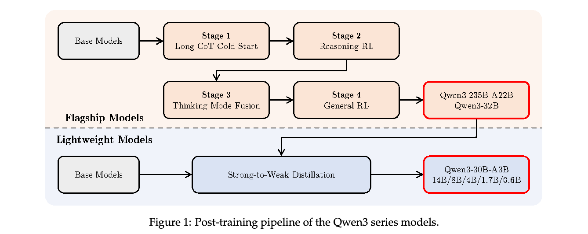
Qwen3 的后训练流程围绕以下两个核心目标进行策略性设计：
如图 1 所示，Qwen3 系列的旗舰模型采用精细的四阶段训练过程。前两个阶段着重培养模型的“思考”能力。后两个阶段旨在为模型整合强大的“非思考”功能。
初步实验表明，将教师模型的输出 logits 直接蒸馏到轻量学生模型中，可以有效增强其性能，同时保持对其推理过程的细粒度控制。这种方法消除了为每个小规模模型单独执行完整四阶段训练流程的必要性。它带来了更好的即时表现，体现为更高的 pass@1 得分；同时也提高了模型的探索能力，体现为更好的 pass@64 结果。此外，这些收益是以高得多的训练效率实现的，所需 GPU 小时数仅为四阶段训练方法的十分之一。
在以下各节中，我们将介绍四阶段训练过程，并详细解释强到弱蒸馏方法。
我们首先筛选整理了一个覆盖广泛类别的综合数据集，包括数学、代码、逻辑推理和一般 STEM 问题。数据集中的每个问题都配有经过验证的参考答案或基于代码的测试用例。该数据集作为长 CoT（long-CoT）训练“冷启动”阶段的基础。
数据集构建包括严格的两阶段筛选过程：查询筛选和响应筛选。在查询筛选阶段，我们使用 Qwen2.5-72B-Instruct 识别并移除不易验证的查询。这包括含有多个子问题的查询，或要求一般文本生成的查询。此外，我们排除 Qwen2.5-72B-Instruct 无需使用 CoT 推理就能正确回答的查询。这有助于防止模型依赖浅层猜测，并确保仅纳入需要更深入推理的复杂问题。此外，我们使用 Qwen2.5-72B-Instruct 标注每个查询的领域，以使数据集中各领域的占比保持均衡。
在预留一个验证查询集后，我们使用 QwQ-32B（Qwen Team, 2025）为每个剩余查询生成 N 个候选响应。当 QwQ-32B 始终无法生成正确解答时，人工标注员会手动评估响应的准确性。对于 pass@N 大于零的查询，我们进一步应用严格的筛选标准，移除以下响应：（1）最终答案错误；（2）包含大量重复；（3）明显体现出缺乏充分推理的猜测；（4）思考内容与总结内容不一致；（5）存在不恰当的语言混用或风格变化；或（6）疑似与潜在验证集条目过度相似。随后，我们从精修后的数据集中精心选择一个子集，用于推理范式的初始冷启动训练。这一阶段的目标是向模型灌输基础推理范式，而不过度强调即时推理表现。这种方法确保模型的潜力不受限制，使其在后续强化学习（RL）阶段具备更大的灵活性和改进空间。为有效实现这一目标，最好在这个准备阶段尽量减少训练样本数量和训练步数。
推理强化学习阶段使用的查询与验证器配对必须满足以下四项标准：（1）未在冷启动阶段使用过。（2）冷启动模型能够从中学习。（3）尽可能具有挑战性。（4）覆盖广泛的子领域。我们最终共收集了 3,995 组查询与验证器配对，并使用 GRPO（Shao et al., 2024）更新模型参数。我们观察到，采用较大的 batch 大小和每个查询较多的 rollout 数量，以及使用 off-policy 训练提高样本效率，对训练过程有益。我们还通过控制模型的熵，使其稳步增加或保持
（本句接第 11 页）
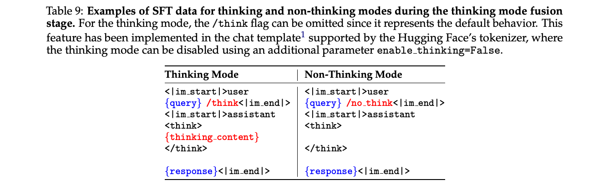
稳定，从而解决如何平衡探索与利用的问题，这对于保持训练稳定至关重要。因此，在单次 RL 运行过程中，训练奖励和验证表现都持续改善，而无需人工干预超参数。例如，在总计 170 个 RL 训练步骤中，Qwen3-235B-A22B 模型的 AIME’24 得分从 70.1 提高到 85.1。
思考模式融合阶段的目标，是将“非思考”能力整合到此前开发的“思考”模型中。这种方法使开发者能够管理和控制推理行为，同时降低分别部署思考任务模型和非思考任务模型的成本与复杂度。为此，我们对推理强化学习模型进行持续 SFT，并设计聊天模板以融合两种模式。此外，我们发现，能够熟练处理两种模式的模型，在不同思考预算下都能保持良好的表现。
SFT 数据构建。SFT 数据集同时结合“思考”和“非思考”数据。为确保额外的 SFT 不损害第二阶段模型的性能，我们使用第二阶段模型本身，在第一阶段的查询上通过拒绝采样生成“思考”数据。另一方面，“非思考”数据经过精心筛选整理，覆盖代码、数学、指令遵循、多语言任务、创意写作、问答和角色扮演等多种任务。此外，我们采用自动生成的检查清单，评估“非思考”数据的响应质量。为增强低资源语言任务的表现，我们特别提高了翻译任务的比例。
聊天模板设计。为更好地整合两种模式，并使用户能够动态切换模型的思考过程，我们为 Qwen3 设计了聊天模板，如表 9 所示。具体而言，对于思考模式和非思考模式样本，我们分别在用户查询或系统消息中引入 /think 和 /no_think 标志。这使模型能够遵循用户输入，相应选择合适的思考模式。对于非思考模式样本，我们在助手响应中保留一个空的思考块。这种设计确保模型内部格式的一致性，并允许开发者通过在聊天模板中拼接一个空的 think 块，阻止模型进行思考。默认情况下，模型在思考模式下运行；因此，我们加入了一些用户查询不包含 /think 标志的思考模式训练样本。对于更复杂的多轮对话，我们在用户查询中随机插入多个 /think 和 /no_think 标志，模型响应遵循最后遇到的标志。
思考预算。思考模式融合还有一个额外优势：模型一旦学会同时在非思考模式和思考模式下响应，就会自然形成处理中间情况的能力，即基于尚未完成的思考生成响应。这一能力为对模型的思考过程实施预算控制奠定了基础。具体而言，当模型的思考长度达到用户定义的阈值时，我们手动停止思考过程，并插入以下停止思考指令：
Considering the limited time by the user, I have to give the solution based on the thinking directly now.\n</think>.\n\n
指令译文：考虑到用户给予的时间有限，我现在必须直接根据已有思考给出解答。代码标记和转义序列按原文保留。
插入这条指令后，模型便基于截至该时刻积累的推理继续生成最终响应。值得注意的是，这一能力并未经过显式训练，而是应用思考模式融合后自然涌现的。
通用强化学习阶段旨在全面增强模型在不同场景中的能力和稳定性。为此，我们建立了一个精细的奖励系统，覆盖 20 多种不同任务，每种任务都有定制的评分标准。这些任务专门针对以下核心能力的提升：
/think 和 /no_think 标志，并始终使用指定的 token（例如 <think> 和 </think>）在最终输出中分隔思考部分和响应部分。为上述任务提供反馈，我们使用了三种不同类型的奖励：
强到弱蒸馏流程专门用于优化轻量模型，包括 5 个稠密模型（Qwen3-0.6B、1.7B、4B、8B 和 14B）以及一个 MoE 模型（Qwen3-30B-A3B）。这种方法在增强模型性能的同时，有效地赋予模型稳健的模式切换能力。蒸馏过程分为两个主要阶段：
/think 和 /no_think 两种模式下生成的输出，进行响应蒸馏。这有助于轻量学生模型形成基础推理技能以及在不同思考模式之间切换的能力，为下一阶段的 on-policy 训练奠定坚实基础。/think 或 /no_think 模式生成响应。随后，通过使学生模型的 logits 与教师模型（Qwen3-32B 或 Qwen3-235B-A22B）的 logits 对齐，以最小化 KL 散度，对学生模型进行微调。为全面评估指令微调模型的质量，我们采用自动化基准测试，评估模型在思考模式和非思考模式下的表现。这些基准测试
（本句接第 13 页）
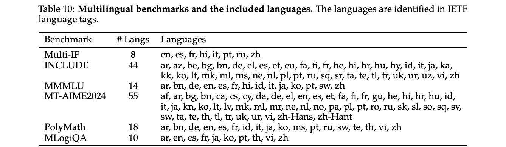
分为以下几个维度：
You will not return anything except for the program）这一限制，调整提示词模板，让模型能够更自由地思考。为评估模型与竞赛编程专家之间的性能差距，我们使用 CodeForces 计算 Elo 等级分。在我们的基准测试中，通过生成最多八次独立的推理尝试来求解每道题。对于所有处于思考模式的 Qwen3 模型，我们使用 0.6 的采样温度、0.95 的 top-p 值以及 20 的 top-k 值。此外，对于 Creative Writing v3 和 WritingBench，我们应用 1.5 的 presence penalty，以鼓励生成更多样的内容。对于处于非思考模式的 Qwen3 模型，我们将采样超参数设置为 temperature = 0.7、top-p = 0.8、top-k = 20，以及 presence penalty = 1.5。对于思考模式和非思考模式，我们均将最大输出长度设为 32,768 个 token；AIME’24 和 AIME’25 除外，这两个基准的输出长度扩展为 38,912 个 token，以提供充足的思考空间。
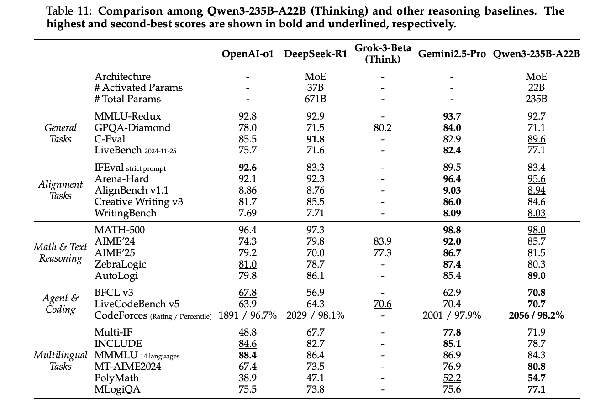
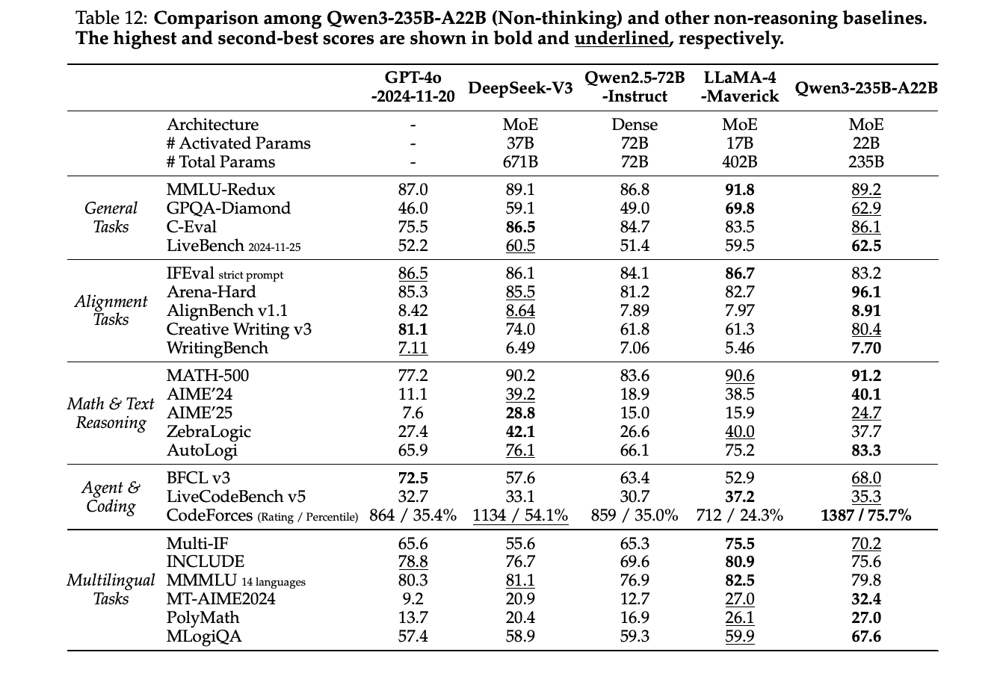
根据评估结果，我们将最终版 Qwen3 模型的几个关键结论总结如下：
详细结果如下。
对于旗舰模型 Qwen3-235B-A22B，我们将其与领先的推理模型和非推理模型进行比较。在思考模式下，我们采用 OpenAI-o1（OpenAI, 2024）、DeepSeek-R1（Guo et al., 2025）、Grok-3-Beta（Think）（xAI, 2025）和 Gemini2.5-Pro（DeepMind, 2025）作为推理基线。在非思考模式下，我们采用 GPT-4o-2024-11-20（OpenAI, 2024）、DeepSeek-V3（Liu et al., 2024a）、Qwen2.5-72B-Instruct（Yang et al., 2024b）和 LLaMA-4-Maverick（Meta-AI, 2025）作为非推理基线。评估结果见表 11 和表 12。
对于旗舰稠密模型 Qwen3-32B，我们在思考模式下采用 DeepSeek-R1-Distill-Llama-70B、OpenAI-o3-mini（medium）以及我们此前最强的推理模型 QwQ-32B（Qwen Team, 2025）作为基线。我们还在非思考模式下采用 GPT-4o-mini-2024-07-18、LLaMA-4-Scout 和我们此前的旗舰模型 Qwen2.5-72B-Instruct 作为基线。评估结果见表 13 和表 14。
对于 Qwen3-30B-A3B 和 Qwen3-14B，我们分别在思考模式下将其与 DeepSeek-R1-Distill-Qwen-32B 和 QwQ-32B 比较，在非思考模式下将其与 Phi-4（Abdin et al., 2024）、Gemma-3-27B-IT（Team et al., 2025）和 Qwen2.5-32B-Instruct 比较。评估结果见表 15 和表 16。
（本句接第 20 页；第 16–19 页为结果表）
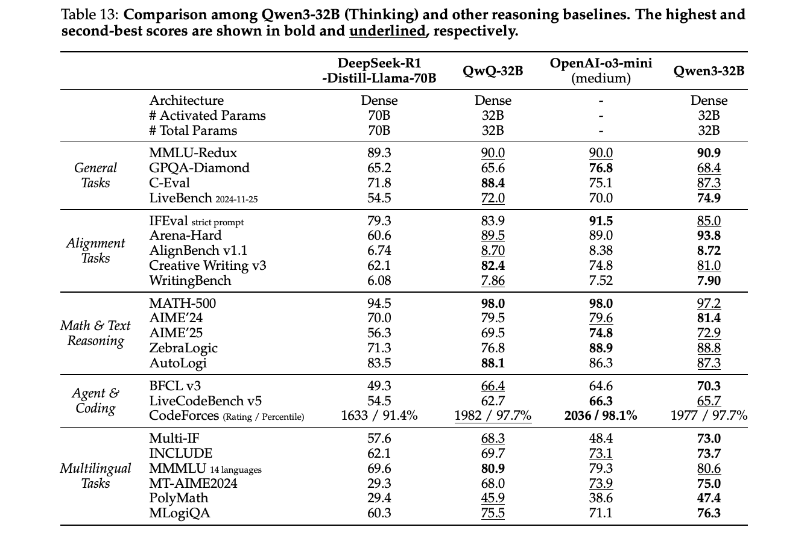
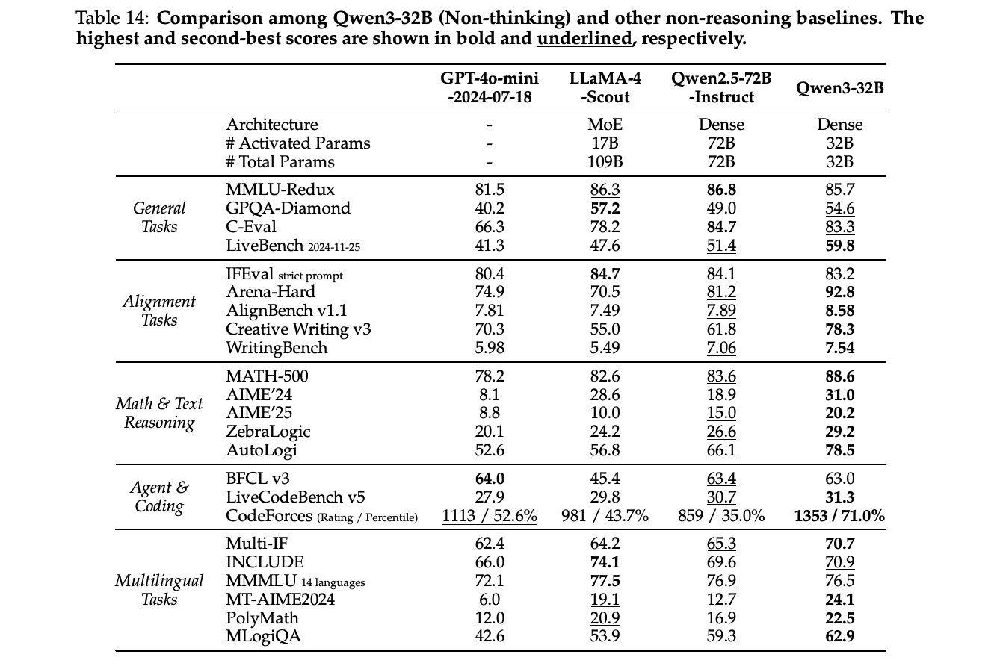
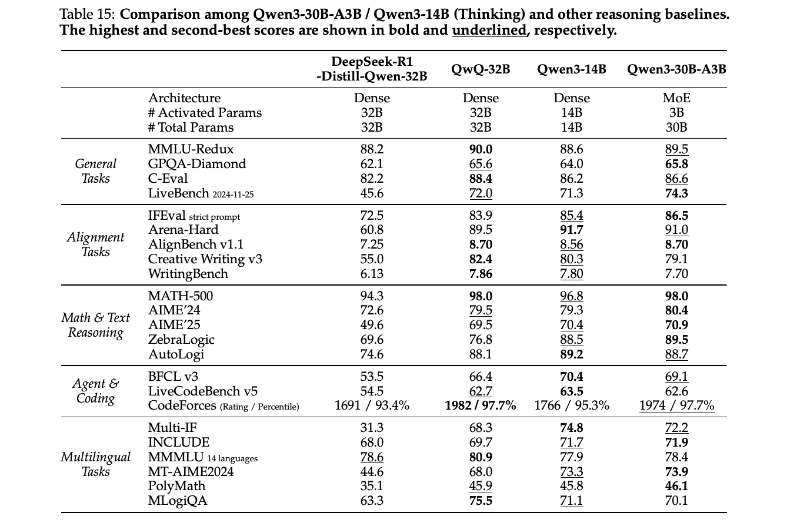
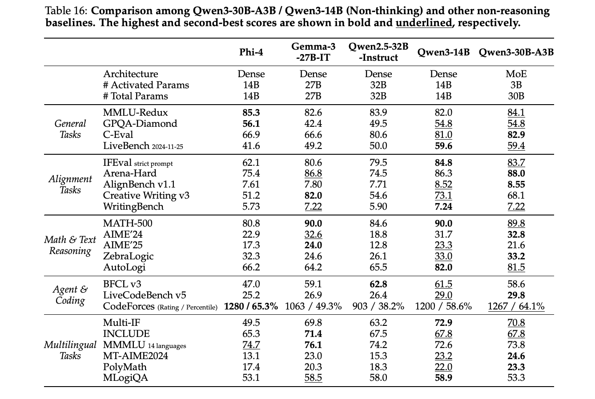
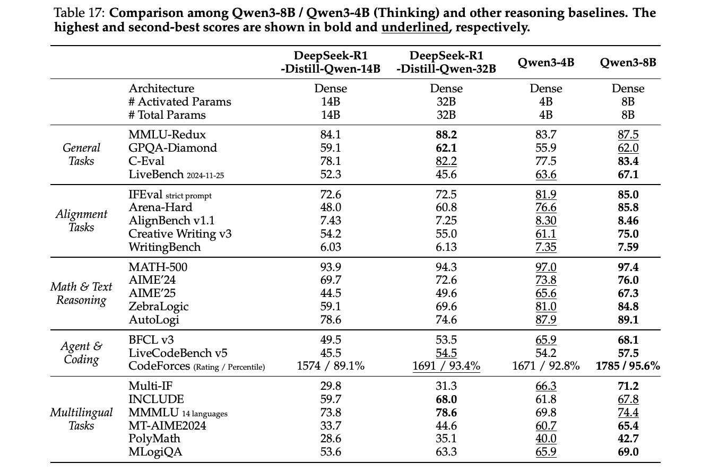
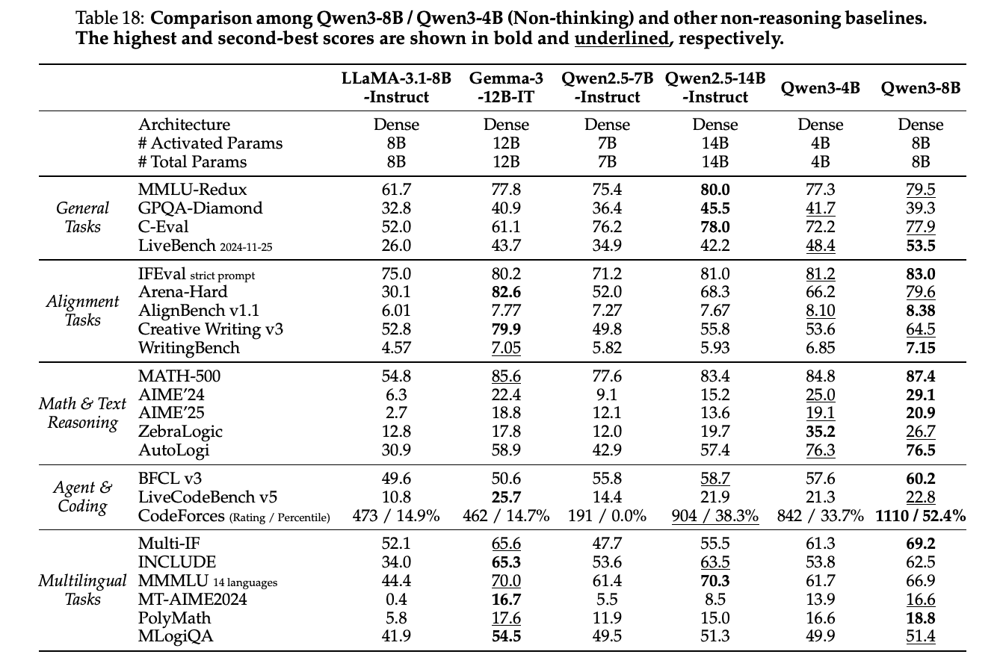
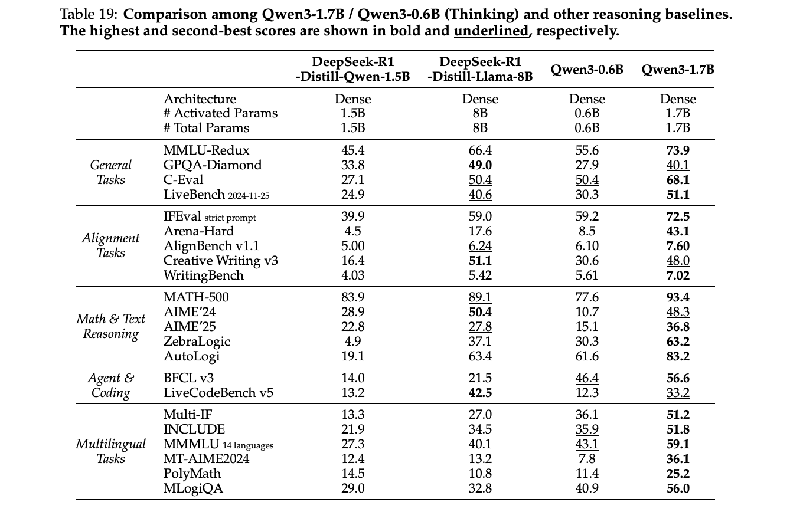
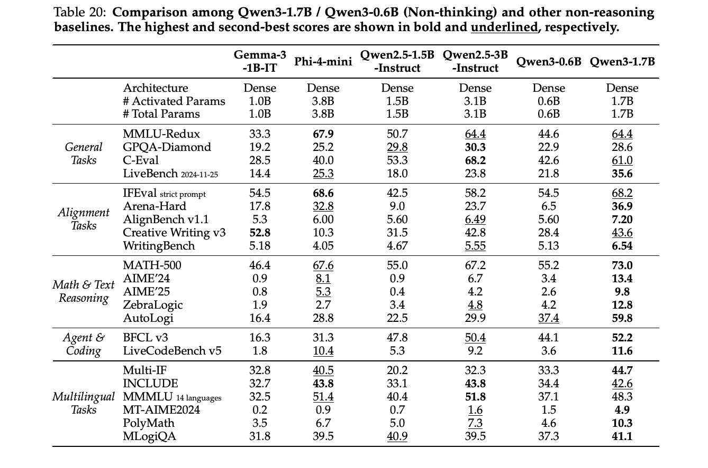
十分之一的激活参数，达到与 QwQ-32B 相当的性能，证明了强到弱蒸馏方法在赋予轻量模型深厚推理能力方面的有效性。
对于 Qwen3-8B 和 Qwen3-4B，我们分别在思考模式下将其与 DeepSeek-R1-Distill-Qwen-14B 和 DeepSeek-R1-Distill-Qwen-32B 比较，在非思考模式下将其与 LLaMA-3.1-8B-Instruct（Dubey et al., 2024）、Gemma-3-12B-IT（Team et al., 2025）、Qwen2.5-7B-Instruct 和 Qwen2.5-14B-Instruct 比较。对于 Qwen3-1.7B 和 Qwen3-0.6B，我们分别在思考模式下将其与 DeepSeek-R1-Distill-Qwen-1.5B 和 DeepSeek-R1-Distill-Llama-8B 比较，在非思考模式下将其与 Gemma-3-1B-IT、Phi-4-mini、Qwen2.5-1.5B-Instruct 和 Qwen2.5-3B-Instruct 比较。Qwen3-8B 和 Qwen3-4B 的评估结果见表 17 和表 18，Qwen3-1.7B 和 Qwen3-0.6B 的评估结果见表 19 和表 20。总体而言，这些端侧模型表现出色，无论在思考模式还是非思考模式下，都超越了甚至拥有更多参数的基线，包括我们此前的 Qwen2.5 模型。这些结果再次证明了强到弱蒸馏方法的有效性，使我们能够以显著减少的成本和工作量构建轻量 Qwen3 模型。
思考预算的有效性。为验证 Qwen3 能够通过增加思考预算提升智能水平，我们在数学、代码和 STEM 领域的四个基准测试中调整了分配的思考预算。得到的扩展曲线如图 2 所示，Qwen3 展现出随分配的思考预算增加而可扩展、平滑的性能提升。此外，我们观察到，如果进一步将输出长度扩展到超过 32K，预计模型未来的性能还会进一步改善。我们将这项探索留作未来工作。
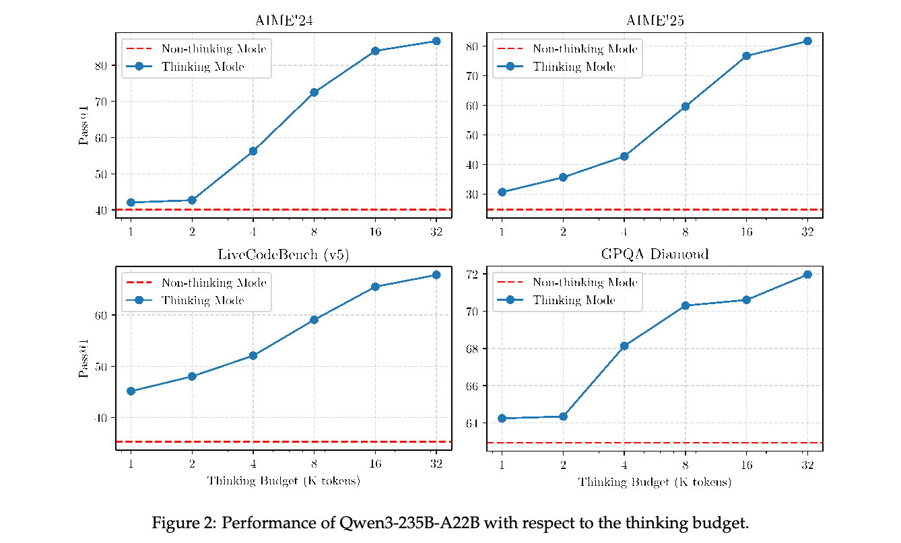
OPD 的有效性与效率。我们通过比较蒸馏与直接强化学习后的性能和计算成本（以 GPU 小时数衡量），评估 OPD 的有效性与效率，两者都从同一个 off-policy 蒸馏后的 8B checkpoint 开始。为简化起见，在
（本句接第 21 页）
这一比较中，我们仅关注数学和代码相关查询。表 21 总结的结果表明，蒸馏的性能显著优于强化学习，而所需 GPU 小时数仅约为其十分之一。此外，从教师模型的 logits 进行蒸馏，使学生模型能够扩展探索空间并增强推理潜力；这一点体现在，与初始 checkpoint 相比，蒸馏后在 AIME’24 和 AIME’25 基准上的 pass@64 得分有所提高。相比之下，强化学习并未使 pass@64 得分得到任何改善。这些观察结果凸显了利用更强教师模型指导学生模型学习的优势。
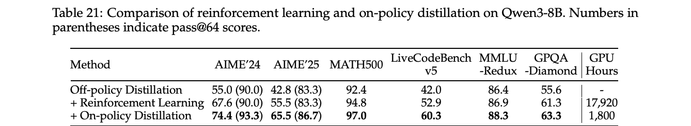
思考模式融合和通用强化学习的影响。为评估后训练过程中思考模式融合和通用强化学习（RL）的有效性，我们对 Qwen3-32B 模型的不同阶段进行评估。除前述数据集外，我们还引入了几个内部基准测试，以监测其他能力。这些基准包括：
译注：此处原文写作 Qwen-32B，按用户确认采用 Qwen3-32B。
/think 和 /no_think 标志的多轮对话，用于测试模型是否能根据用户查询正确切换思考模式。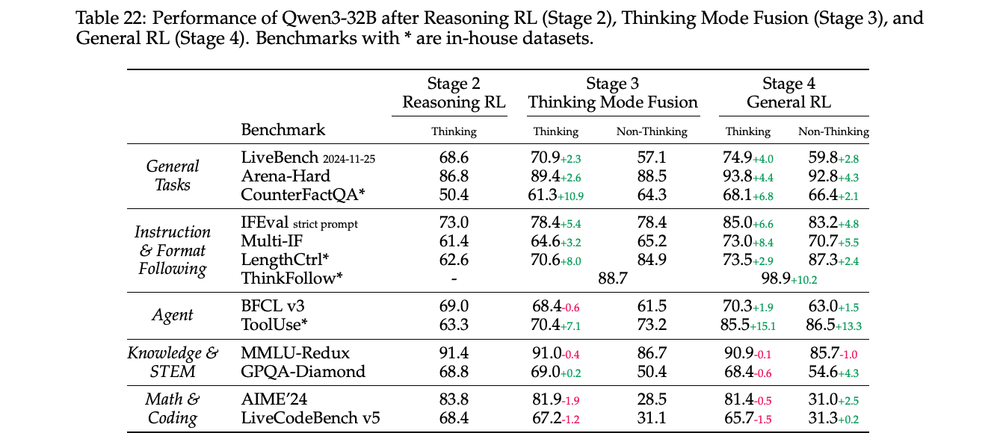
结果如表 22 所示，我们可以得出以下结论：
在本技术报告中，我们介绍了 Qwen 系列的最新版本 Qwen3。Qwen3 同时具有思考模式和非思考模式，使用户能够动态管理用于复杂思考任务的 token 数量。该模型在包含 36 万亿个 token 的庞大数据集上进行预训练，使其能够理解并生成 119 种语言和方言的文本。通过一系列全面评估，Qwen3 的预训练模型和后训练模型均在一系列标准基准测试中表现出强劲的性能，包括代码生成、数学、推理和 agent 相关任务。
在不久的将来，我们的研究将聚焦几个关键领域。我们将使用质量更高、内容更多样的数据，继续扩大预训练规模。同时，我们将改进模型架构和训练方法，以实现有效压缩、扩展到超长上下文等目标。此外，我们计划增加强化学习的计算资源，尤其关注从环境反馈中学习的 agent 强化学习系统。这将使我们能够构建有能力处理需要推理时扩展的复杂任务的 agent。
核心贡献者：An Yang, Anfeng Li, Baosong Yang, Beichen Zhang, Binyuan Hui, Bo Zheng, Bowen Yu, Chang Gao, Chengen Huang, Chenxu Lv, Chujie Zheng, Dayiheng Liu, Fan Zhou, Fei Huang, Feng Hu, Hao Ge, Haoran Wei, Huan Lin, Jialong Tang, Jian Yang, Jianhong Tu, Jianwei Zhang, Jianxin Yang, Jiaxi Yang, Jing Zhou, Jingren Zhou, Junyang Lin, Kai Dang, Keqin Bao, Kexin Yang, Le Yu, Lianghao Deng, Mei Li, Mingfeng Xue, Mingze Li, Pei Zhang, Peng Wang, Qin Zhu, Rui Men, Ruize Gao, Shixuan Liu, Shuang Luo, Tianhao Li, Tianyi Tang, Wenbiao Yin, Xingzhang Ren, Xinyu Wang, Xinyu Zhang, Xuancheng Ren, Yang Fan, Yang Su, Yichang Zhang, Yinger Zhang, Yu Wan, Yuqiong Liu, Zekun Wang, Zeyu Cui, Zhenru Zhang, Zhipeng Zhou, Zihan Qiu
贡献者：Bei Chen, Biao Sun, Bin Luo, Bin Zhang, Binghai Wang, Bowen Ping, Boyi Deng, Chang Si, Chaojie Yang, Chen Cheng, Chenfei Wu, Chengpeng Li, Chengyuan Li, Fan Hong, Guobin Zhao, Hang Zhang, Hangrui Hu, Hanyu Zhao, Hao Lin, Hao Xiang, Haoyan Huang, Hongkun Hao, Humen Zhong, Jialin Wang, Jiandong Jiang, Jianqiang Wan, Jianyuan Zeng, Jiawei Chen, Jie Zhang, Jin Xu, Jinkai Wang, Jinyang Zhang, Jinzheng He, Jun Tang, Kai Zhang, Ke Yi, Keming Lu, Keqin Chen, Langshi Chen, Le Jiang, Lei Zhang, Linjuan Wu, Man Yuan, Mingkun Yang, Minmin Sun, Mouxiang Chen, Na Ni, Nuo Chen, Peng Liu, Peng Wang, Peng Zhu, Pengcheng Zhang, Pengfei Wang, Qiaoyu Tang, Qing Fu, Qiuyue Wang, Rong Zhang, Rui Hu, Runji Lin, Shen Huang, Shuai Bai, Shutong Jiang, Sibo Song, Siqi Zhang, Song Chen, Tao He, Ting He, Tingfeng Hui, Wei Ding, Wei Liao, Wei Lin, Wei Zhang, Weijia Xu, Wenbin Ge, Wenmeng Zhou, Wenyuan Yu, Xianyan Jia, Xianzhong Shi, Xiaodong Deng, Xiaoming Huang, Xiaoyuan Li, Ximing Zhou, Xinyao Niu, Xipin Wei, Xuejing Liu, Yang Liu, Yang Yao, Yang Zhang, Yanpeng Li, Yantao Liu, Yidan Zhang, Yikai Zhu, Yiming Wang, Yiwen Hu, Yong Jiang, Yong Li, Yongan Yue, Yu Guan, Yuanzhi Zhu, Yunfei Chu, Yunlong Feng, Yuxin Zhou, Yuxuan Cai, Zeyao Ma, Zhaohai Li, Zheng Li, Zhengyang Tang, Zheren Fu, Zhi Li, Zhibo Yang, Zhifang Guo, Zhipeng Zhang, Zhiying Xu, Zhiyu Yin, Zhongshen Zeng, Zile Qiao, Ziye Meng, Zongmeng Zhang
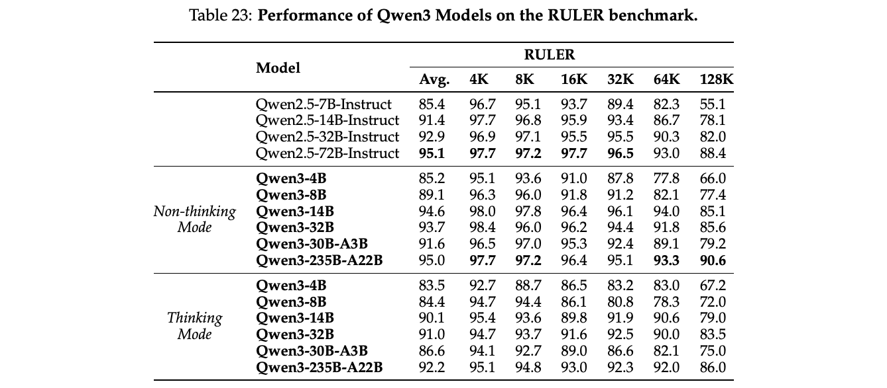
为评估长上下文处理能力，我们在表 23 中报告了 RULER 基准（Hsieh et al., 2024）的结果。为实现长度外推，我们使用 YaRN（Peng et al., 2023），设置 scaling_factor=4。在思考模式下，我们将思考预算设置为 8192 个 token，以减轻模型在极长输入上进行过于冗长的推理。
结果表明：
表 24–35 展示了多种语言的详细基准得分，包括西班牙语、法语、葡萄牙语、意大利语、阿拉伯语、日语、韩语、印度尼西亚语、俄语、越南语、德语和泰语。这些表的结果表明，Qwen3 系列模型在所有评估基准中都取得了具有竞争力的表现，展示了其强大的多语言能力。
为评估 Qwen3 在更广泛语言范围内的表现，我们使用自然语言理解基准 Belebele（Bandarkar et al., 2023）。我们对该基准中 80 种受支持的语言进行评估，排除了 42 种未进行优化的语言，如表 36 所示（按语系组织）。Qwen3 与其他基线模型在 Belebele 基准上的性能比较见表 37。结果表明，Qwen3 达到与规模相近的 Gemma 模型相当的性能，同时显著超越 Qwen2.5。
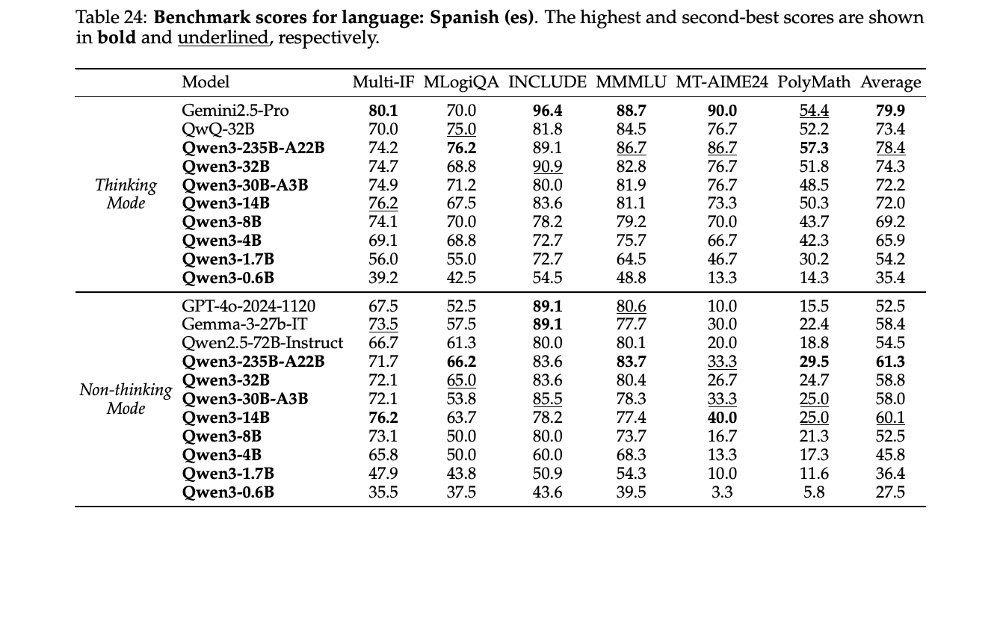
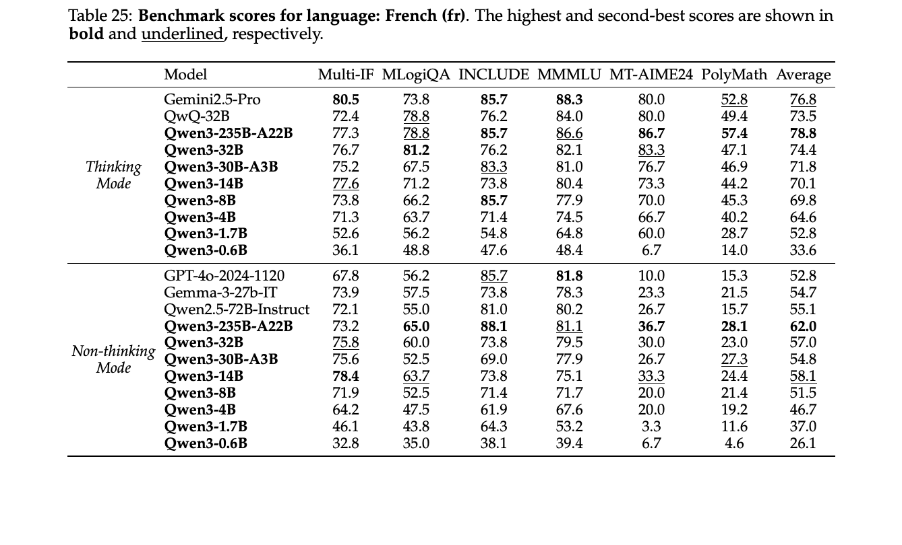
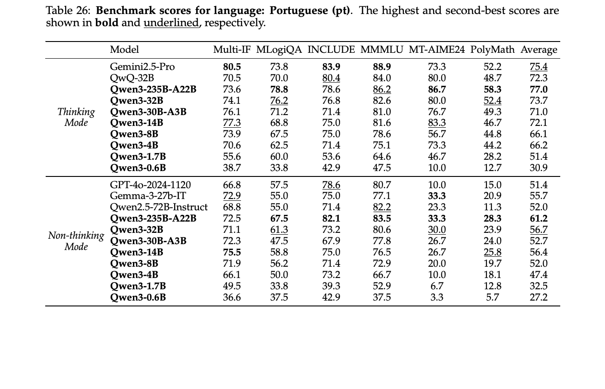
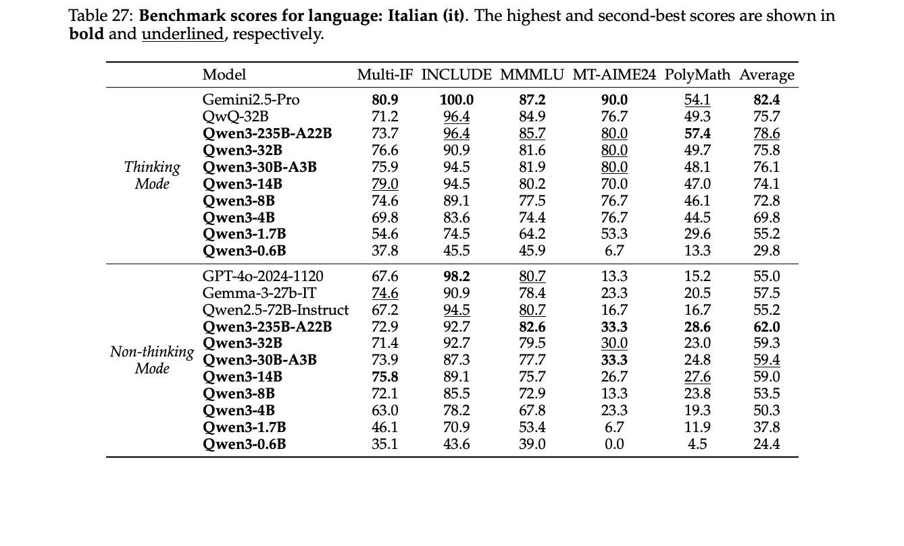
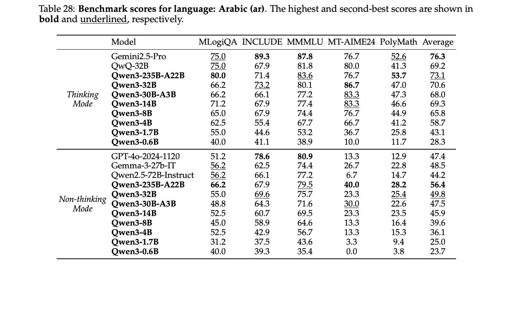
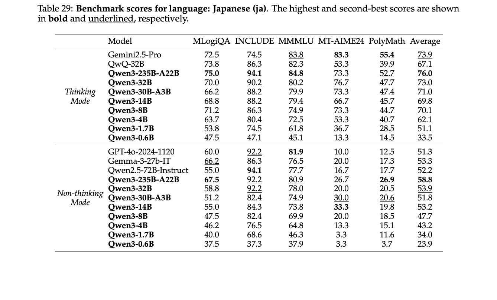
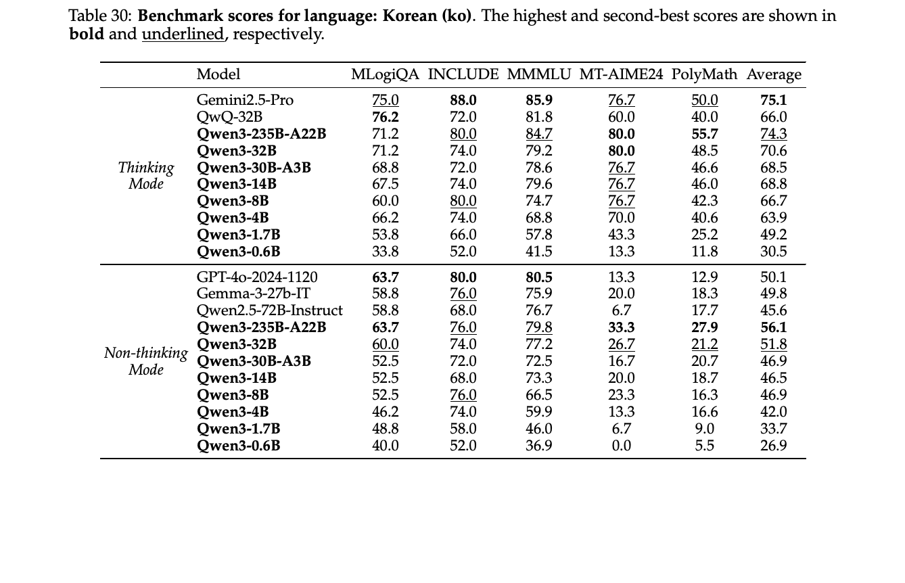
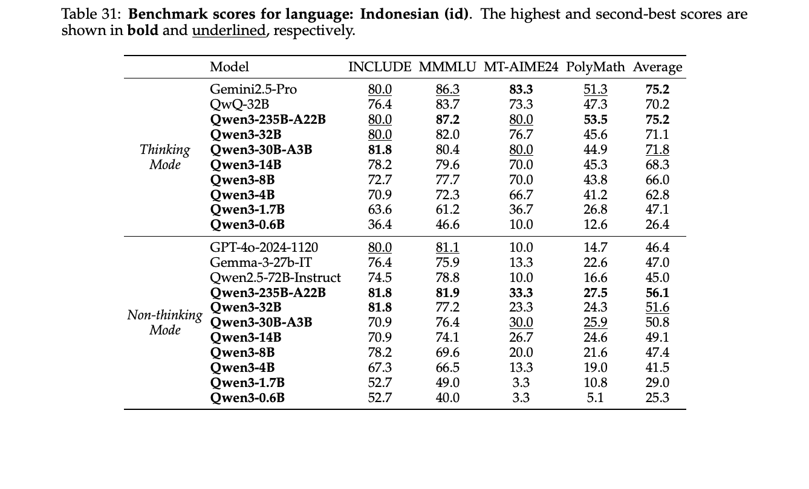
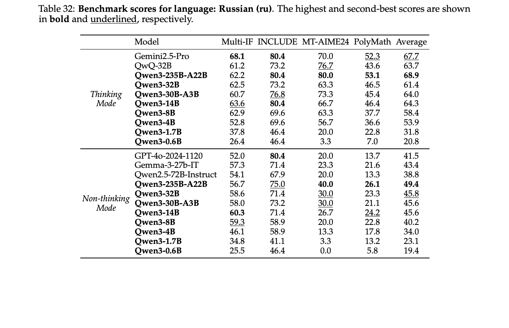
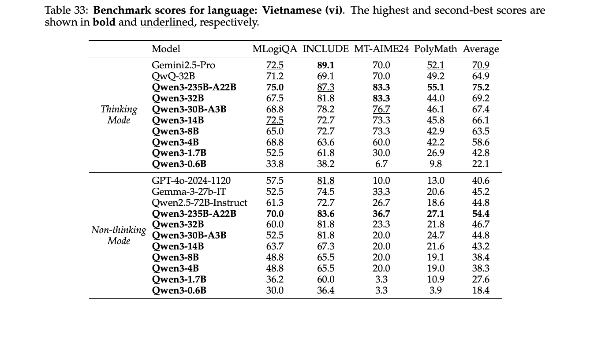
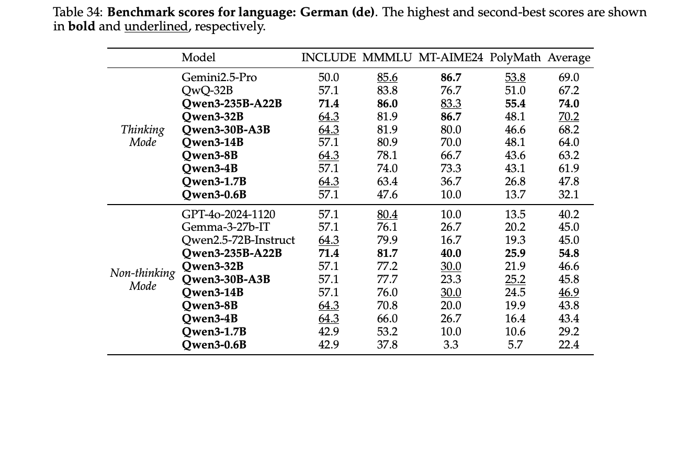
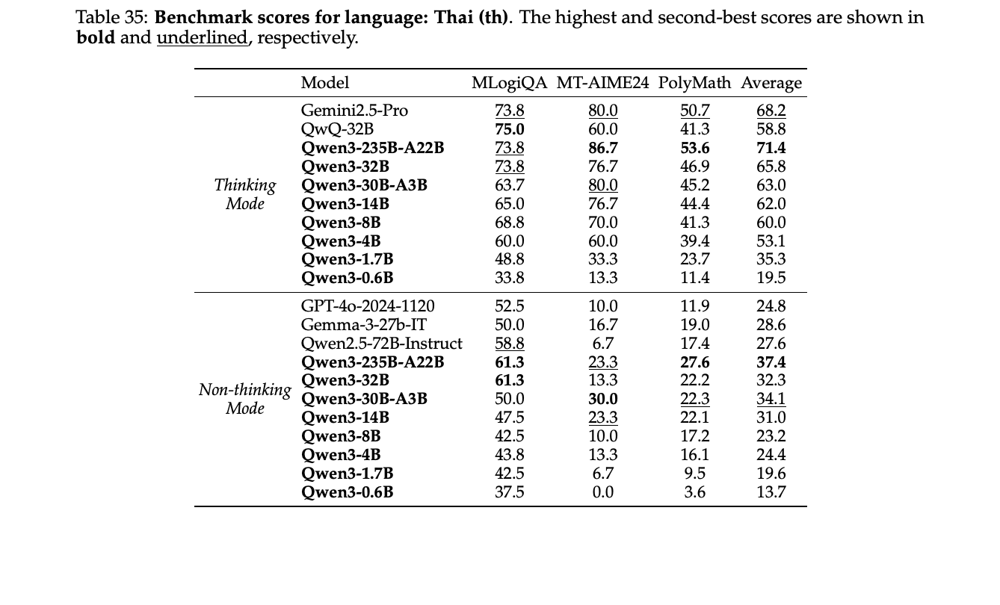
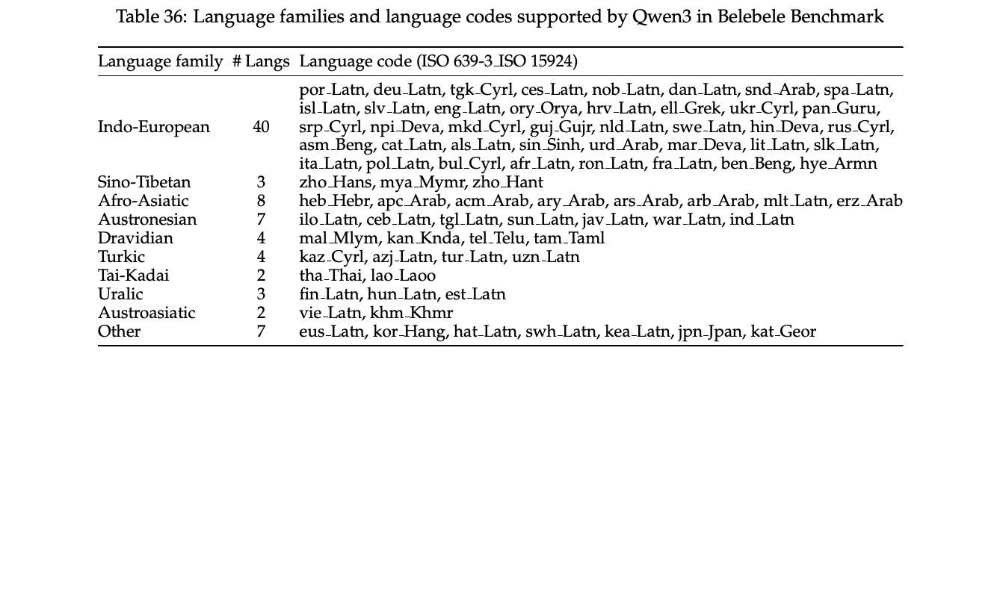
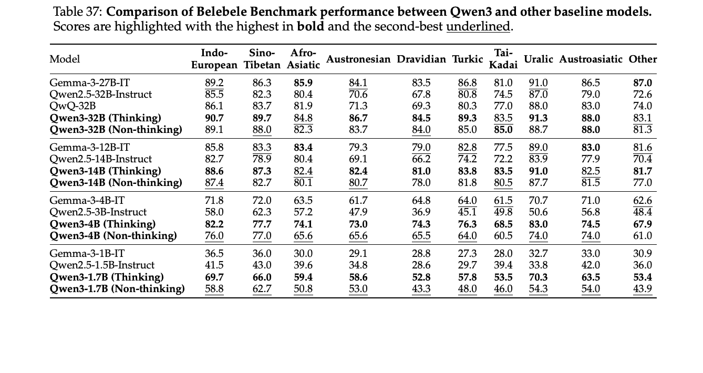
Marah Abdin, Jyoti Aneja, Harkirat Behl, Se´bastien Bubeck, Ronen Eldan, Suriya Gunasekar, Michael Harrison, Russell J Hewett, Mojan Javaheripi, Piero Kauffmann, 等 Phi-4 技术报告. arXiv 预印本 arXiv:2412.08905, 2024.
AIME. AIME 试题与解答, 2025. URL https://artofproblemsolving.com/wiki/index.php/AIME_Problems_and_Solutions.
Joshua Ainslie, James Lee-Thorp, Michiel de Jong, Yury Zemlyanskiy, Federico Lebro´n, and Sumit Sanghai. GQA：从多头 checkpoint 训练广义多查询 Transformer 模型. In EMNLP, pp. 4895–4901. Association for Computational Linguistics, 2023.
Chenxin An, Fei Huang, Jun Zhang, Shansan Gong, Xipeng Qiu, Chang Zhou, and Lingpeng Kong. 无需训练的 LLM 长上下文扩展. CoRR, abs/2402.17463, 2024.
Anthropic. Claude 3.7 Sonnet, 2025. URL https://www.anthropic.com/news/claude-3-7-sonnet.
Jacob Austin, Augustus Odena, Maxwell I. Nye, Maarten Bosma, Henryk Michalewski, David Dohan, Ellen Jiang, Carrie J. Cai, Michael Terry, Quoc V. Le, and Charles Sutton. 使用 LLM 进行程序合成. CoRR, abs/2108.07732, 2021.
Jinze Bai, Shuai Bai, Yunfei Chu, Zeyu Cui, Kai Dang, Xiaodong Deng, Yang Fan, Wenbin Ge, Yu Han, Fei Huang, Binyuan Hui, Luo Ji, Mei Li, Junyang Lin, Runji Lin, Dayiheng Liu, Gao Liu, Chengqiang Lu, Keming Lu, Jianxin Ma, Rui Men, Xingzhang Ren, Xuancheng Ren, Chuanqi Tan, Sinan Tan, Jianhong Tu, Peng Wang, Shijie Wang, Wei Wang, Shengguang Wu, Benfeng Xu, Jin Xu, An Yang, Hao Yang, Jian Yang, Shusheng Yang, Yang Yao, Bowen Yu, Hongyi Yuan, Zheng Yuan, Jianwei Zhang, Xingxuan Zhang, Yichang Zhang, Zhenru Zhang, Chang Zhou, Jingren Zhou, Xiaohuan Zhou, and Tianhang Zhu. Qwen 技术报告. CoRR, abs/2309.16609, 2023.
Shuai Bai, Keqin Chen, Xuejing Liu, Jialin Wang, Wenbin Ge, Sibo Song, Kai Dang, Peng Wang, Shijie Wang, Jun Tang, 等 Qwen2.5-VL 技术报告. arXiv 预印本 arXiv:2502.13923, 2025.
Lucas Bandarkar, Davis Liang, Benjamin Muller, Mikel Artetxe, Satya Narayan Shukla, Donald Husa, Naman Goyal, Abhinandan Krishnan, Luke Zettlemoyer, and Madian Khabsa. Belebele 基准：涵盖 122 种语言变体的平行阅读理解数据集. CoRR, abs/2308.16884, 2023.
Tom B. Brown, Benjamin Mann, Nick Ryder, Melanie Subbiah, Jared Kaplan, Prafulla Dhariwal, Arvind Neelakantan, Pranav Shyam, Girish Sastry, Amanda Askell, Sandhini Agarwal, Ariel Herbert-Voss, Gretchen Krueger, Tom Henighan, Rewon Child, Aditya Ramesh, Daniel M. Ziegler, Jeffrey Wu, Clemens Winter, Christopher Hesse, Mark Chen, Eric Sigler, Mateusz Litwin, Scott Gray, Benjamin Chess, Jack Clark, Christopher Berner, Sam McCandlish, Alec Radford, Ilya Sutskever, and Dario Amodei. 语言模型是少样本学习器. In NeurIPS, 2020.
Federico Cassano, John Gouwar, Daniel Nguyen, Sydney Nguyen, Luna Phipps-Costin, Donald Pinckney, Ming-Ho Yee, Yangtian Zi, Carolyn Jane Anderson, Molly Q. Feldman, Arjun Guha, Michael Greenberg, and Abhinav Jangda. MultiPL-E：一种可扩展的、多编程语言的神经代码生成基准测试方法. IEEE Trans. Software Eng., 49(7):3675–3691, 2023.
Mark Chen, Jerry Tworek, Heewoo Jun, Qiming Yuan, Henrique Ponde´ de Oliveira Pinto, Jared Kaplan, Harrison Edwards, Yuri Burda, Nicholas Joseph, Greg Brockman, Alex Ray, Raul Puri, Gretchen Krueger, Michael Petrov, Heidy Khlaaf, Girish Sastry, Pamela Mishkin, Brooke Chan, Scott Gray, Nick Ryder, Mikhail Pavlov, Alethea Power, Lukasz Kaiser, Mohammad Bavarian, Clemens Winter, Philippe Tillet, Felipe Petroski Such, Dave Cummings, Matthias Plappert, Fotios Chantzis, Elizabeth Barnes, Ariel Herbert-Voss, William Hebgen Guss, Alex Nichol, Alex Paino, Nikolas Tezak, Jie Tang, Igor Babuschkin, Suchir Balaji, Shantanu Jain, William Saunders, Christopher Hesse, Andrew N. Carr, Jan Leike, Joshua Achiam, Vedant Misra, Evan Morikawa, Alec Radford, Matthew Knight, Miles Brundage, Mira Murati, Katie Mayer, Peter Welinder, Bob McGrew, Dario Amodei, Sam McCandlish, Ilya Sutskever, and Wojciech Zaremba. 评估在代码上训练的 LLM. CoRR, abs/2107.03374, 2021.
Karl Cobbe, Vineet Kosaraju, Mohammad Bavarian, Mark Chen, Heewoo Jun, Lukasz Kaiser, Matthias Plappert, Jerry Tworek, Jacob Hilton, Reiichiro Nakano, Christopher Hesse, and John Schulman. 训练验证器以求解数学应用题. CoRR, abs/2110.14168, 2021.
Damai Dai, Chengqi Deng, Chenggang Zhao, R. X. Xu, Huazuo Gao, Deli Chen, Jiashi Li, Wangding Zeng, Xingkai Yu, Y. Wu, Zhenda Xie, Y. K. Li, Panpan Huang, Fuli Luo, Chong Ruan, Zhifang Sui, and Wenfeng Liang. DeepSeekMoE：迈向 MoE 语言模型中的极致专家专门化. CoRR, abs/2401.06066, 2024.
Yann N. Dauphin, Angela Fan, Michael Auli, and David Grangier. 使用门控卷积网络进行语言建模. In ICML, volume 70 of Proceedings of Machine Learning Research, pp. 933–941. PMLR, 2017.
Google DeepMind. Gemini 2.5, 2025. URL https://blog.google/technology/google-deepmind/gemini-model-thinking-updates-march-2025/.
Mostafa Dehghani, Josip Djolonga, Basil Mustafa, Piotr Padlewski, Jonathan Heek, Justin Gilmer, Andreas Peter Steiner, Mathilde Caron, Robert Geirhos, Ibrahim Alabdulmohsin, Rodolphe Jenatton, Lucas Beyer, Michael Tschannen, Anurag Arnab, Xiao Wang, Carlos Riquelme Ruiz, Matthias Minderer, Joan Puigcerver, Utku Evci, Manoj Kumar, Sjoerd van Steenkiste, Gamaleldin Fathy Elsayed, Aravindh Mahendran, Fisher Yu, Avital Oliver, Fantine Huot, Jasmijn Bastings, Mark Collier, Alexey A. Gritsenko, Vighnesh Birodkar, Cristina Nader Vasconcelos, Yi Tay, Thomas Mensink, Alexander Kolesnikov, Filip Pavetic, Dustin Tran, Thomas Kipf, Mario Lucic, Xiaohua Zhai, Daniel Keysers, Jeremiah J. Harmsen, and Neil Houlsby. 将视觉 Transformer 扩展到 220 亿个参数. In ICML, volume 202 of Proceedings of Machine Learning Research, pp. 7480–7512. PMLR, 2023.
Xinrun Du, Yifan Yao, Kaijing Ma, Bingli Wang, Tianyu Zheng, King Zhu, Minghao Liu, Yiming Liang, Xiaolong Jin, Zhenlin Wei, 等 SuperGPQA：将 LLM 评估扩展到 285 个研究生学科. arXiv 预印本 arXiv:2502.14739, 2025.
Abhimanyu Dubey, Abhinav Jauhri, Abhinav Pandey, Abhishek Kadian, Ahmad Al-Dahle, Aiesha Letman, Akhil Mathur, Alan Schelten, Amy Yang, Angela Fan, Anirudh Goyal, Anthony Hartshorn, Aobo Yang, Archi Mitra, Archie Sravankumar, Artem Korenev, Arthur Hinsvark, Arun Rao, Aston Zhang, Aure´lien Rodriguez, Austen Gregerson, Ava Spataru, Baptiste Rozie`re, Bethany Biron, Binh Tang, Bobbie Chern, Charlotte Caucheteux, Chaya Nayak, Chloe Bi, Chris Marra, Chris McConnell, Christian Keller, Christophe Touret, Chunyang Wu, Corinne Wong, Cristian Canton Ferrer, Cyrus Nikolaidis, Damien Allonsius, Daniel Song, Danielle Pintz, Danny Livshits, David Esiobu, Dhruv Choudhary, Dhruv Mahajan, Diego Garcia-Olano, Diego Perino, Dieuwke Hupkes, Egor Lakomkin, Ehab AlBadawy, Elina Lobanova, Emily Dinan, Eric Michael Smith, Filip Radenovic, Frank Zhang, Gabriel Synnaeve, Gabrielle Lee, Georgia Lewis Anderson, Graeme Nail, Gre´goire Mialon, Guan Pang, Guillem Cucurell, Hailey Nguyen, Hannah Korevaar, Hu Xu, Hugo Touvron, Iliyan Zarov, Imanol Arrieta Ibarra, Isabel M. Kloumann, Ishan Misra, Ivan Evtimov, Jade Copet, Jaewon Lee, Jan Geffert, Jana Vranes, Jason Park, Jay Mahadeokar, Jeet Shah, Jelmer van der Linde, Jennifer Billock, Jenny Hong, Jenya Lee, Jeremy Fu, Jianfeng Chi, Jianyu Huang, Jiawen Liu, Jie Wang, Jiecao Yu, Joanna Bitton, Joe Spisak, Jongsoo Park, Joseph Rocca, Joshua Johnstun, Joshua Saxe, Junteng Jia, Kalyan Vasuden Alwala, Kartikeya Upasani, Kate Plawiak, Ke Li, Kenneth Heafield, Kevin Stone, and 等 Llama 3 模型家族. CoRR, abs/2407.21783, 2024.
Simin Fan, Matteo Pagliardini, and Martin Jaggi. DoGE：利用泛化估计进行领域重新加权. arXiv 预印本 arXiv:2310.15393, 2023.
Aryo Pradipta Gema, Joshua Ong Jun Leang, Giwon Hong, Alessio Devoto, Alberto Carlo Maria Mancino, Rohit Saxena, Xuanli He, Yu Zhao, Xiaotang Du, Mohammad Reza Ghasemi Madani, 等 我们已经完成对 MMLU 的研究了吗？ CoRR, abs/2406.04127, 2024.
Alex Gu, Baptiste Rozie`re, Hugh Leather, Armando Solar-Lezama, Gabriel Synnaeve, and Sida I. Wang. CRUXEval：用于代码推理、理解和执行的基准. arXiv 预印本 arXiv:2401.03065, 2024.
Daya Guo, Dejian Yang, Haowei Zhang, Junxiao Song, Ruoyu Zhang, Runxin Xu, Qihao Zhu, Shirong Ma, Peiyi Wang, Xiao Bi, 等 DeepSeek-R1：通过强化学习激发 LLM 的推理能力. arXiv 预印本 arXiv:2501.12948, 2025.
Yun He, Di Jin, Chaoqi Wang, Chloe Bi, Karishma Mandyam, Hejia Zhang, Chen Zhu, Ning Li, Tengyu Xu, Hongjiang Lv, 等 Multi-IF：评估 LLM 的多轮和多语言指令遵循能力. arXiv 预印本 arXiv:2410.15553, 2024.
Dan Hendrycks, Collin Burns, Steven Basart, Andy Zou, Mantas Mazeika, Dawn Song, and Jacob Steinhardt. 衡量大规模多任务语言理解能力. In ICLR. OpenReview.net, 2021a.
Dan Hendrycks, Collin Burns, Saurav Kadavath, Akul Arora, Steven Basart, Eric Tang, Dawn Song, and Jacob Steinhardt. 使用 MATH 数据集衡量数学问题求解能力. In NeurIPS Datasets and Benchmarks, 2021b.
Cheng-Ping Hsieh, Simeng Sun, Samuel Kriman, Shantanu Acharya, Dima Rekesh, Fei Jia, Yang Zhang, and Boris Ginsburg. RULER：你的长上下文语言模型的真实上下文大小是多少？ CoRR, abs/2404.06654, 2024.
Yuzhen Huang, Yuzhuo Bai, Zhihao Zhu, Junlei Zhang, Jinghan Zhang, Tangjun Su, Junteng Liu, Chuancheng Lv, Yikai Zhang, Jiayi Lei, Yao Fu, Maosong Sun, and Junxian He. C-Eval：用于基础模型的多层次、多学科中文评估套件. In NeurIPS, 2023.
Binyuan Hui, Jian Yang, Zeyu Cui, Jiaxi Yang, Dayiheng Liu, Lei Zhang, Tianyu Liu, Jiajun Zhang, Bowen Yu, Keming Lu, 等 Qwen2.5-Coder 技术报告. CoRR, abs/2409.12186, 2024.
Naman Jain, King Han, Alex Gu, Wen-Ding Li, Fanjia Yan, Tianjun Zhang, Sida Wang, Armando Solar-Lezama, Koushik Sen, and Ion Stoica. LiveCodeBench：对 LLM 代码能力进行全面且无污染的评估. CoRR, abs/2403.07974, 2024.
Zixuan Jiang, Jiaqi Gu, Hanqing Zhu, and David Z. Pan. Pre-RMSNorm 与 Pre-CRMSNorm Transformer：等价且高效的 pre-LN Transformer. CoRR, abs/2305.14858, 2023.
Nathan Lambert, Jacob Morrison, Valentina Pyatkin, Shengyi Huang, Hamish Ivison, Faeze Brahman, Lester James V. Miranda, Alisa Liu, Nouha Dziri, Shane Lyu, Yuling Gu, Saumya Malik, Victoria Graf, Jena D. Hwang, Jiangjiang Yang, Ronan Le Bras, Oyvind Tafjord, Chris Wilhelm, Luca Soldaini, Noah A. Smith, Yizhong Wang, Pradeep Dasigi, and Hannaneh Hajishirzi. Tülu 3：推进开放语言模型后训练的前沿. CoRR, abs/2411.15124, 2024.
Tianle Li, Wei-Lin Chiang, Evan Frick, Lisa Dunlap, Tianhao Wu, Banghua Zhu, Joseph E. Gonzalez, and Ion Stoica. 从众包数据到高质量基准：Arena-Hard 与 BenchBuilder 流程. CoRR, abs/2406.11939, 2024.
Hunter Lightman, Vineet Kosaraju, Yura Burda, Harri Edwards, Bowen Baker, Teddy Lee, Jan Leike, John Schulman, Ilya Sutskever, and Karl Cobbe. 让我们逐步验证. CoRR, abs/2305.20050, 2023.
Bill Yuchen Lin, Ronan Le Bras, Kyle Richardson, Ashish Sabharwal, Radha Poovendran, Peter Clark, and Yejin Choi. ZebraLogic：论 LLM 逻辑推理的扩展极限. CoRR, abs/2502.01100, 2025.
Aixin Liu, Bei Feng, Bing Xue, Bingxuan Wang, Bochao Wu, Chengda Lu, Chenggang Zhao, Chengqi Deng, Chenyu Zhang, Chong Ruan, 等 DeepSeek-V3 技术报告. arXiv 预印本 arXiv:2412.19437, 2024a.
Jiawei Liu, Chunqiu Steven Xia, Yuyao Wang, and Lingming Zhang. ChatGPT 生成的代码真的正确吗？对 LLM 代码生成能力的严格评估. In NeurIPS, 2023a.
Qian Liu, Xiaosen Zheng, Niklas Muennighoff, Guangtao Zeng, Longxu Dou, Tianyu Pang, Jing Jiang, and Min Lin. RegMix：将语言模型预训练的数据混合视为回归问题. arXiv 预印本 arXiv:2407.01492, 2024b.
Xiao Liu, Xuanyu Lei, Shengyuan Wang, Yue Huang, Zhuoer Feng, Bosi Wen, Jiale Cheng, Pei Ke, Yifan Xu, Weng Lam Tam, Xiaohan Zhang, Lichao Sun, Hongning Wang, Jing Zhang, Minlie Huang, Yuxiao Dong, and Jie Tang. AlignBench：评估 LLM 的中文对齐能力. CoRR, abs/2311.18743, 2023b.
Meta-AI. Llama 4 模型家族：原生多模态人工智能创新新时代的开端, 2025. URL https://ai.meta.com/blog/llama-4-multimodal-intelligence/.
OpenAI. 你好，GPT-4o, 2024. URL https://openai.com/index/hello-gpt-4o/.
OpenAI. 多语言大规模多任务语言理解, 2024. URL https://huggingface.co/datasets/openai/MMMLU.
OpenAI. 让 LLM 学会推理, 2024. URL https://openai.com/index/learning-to-reason-with-llms/.
OpenAI. 介绍 OpenAI o3 和 o4-mini, 2025. URL https://openai.com/index/introducing-o3-and-o4-mini/.
Samuel J. Paech. 创意写作 v3, 2024. URL https://eqbench.com/creative_writing.html.
Bowen Peng, Jeffrey Quesnelle, Honglu Fan, and Enrico Shippole. YaRN：高效扩展 LLM 的上下文窗口. CoRR, abs/2309.00071, 2023.
Zihan Qiu, Zeyu Huang, Bo Zheng, Kaiyue Wen, Zekun Wang, Rui Men, Ivan Titov, Dayiheng Liu, Jingren Zhou, and Junyang Lin. 细节中的魔鬼：论用于训练专门化 MoE 模型的负载均衡损失的实现. CoRR, abs/2501.11873, 2025.
Shanghaoran Quan, Jiaxi Yang, Bowen Yu, Bo Zheng, Dayiheng Liu, An Yang, Xuancheng Ren, Bofei Gao, Yibo Miao, Yunlong Feng, Zekun Wang, Jian Yang, Zeyu Cui, Yang Fan, Yichang Zhang, Binyuan Hui, and Junyang Lin. CodeElo：使用可与人类比较的 Elo 等级分评估 LLM 的竞赛级代码生成能力. CoRR, abs/2501.01257, 2025.
Qwen Team. QwQ：深入思考未知的边界, 2024 年 11 月. URL https://qwenlm.github.io/blog/qwq-32b-preview/.
Qwen Team. QwQ-32B：拥抱强化学习的力量, 2025 年 3 月. URL https://qwenlm.github.io/blog/qwq-32b/.
David Rein, Betty Li Hou, Asa Cooper Stickland, Jackson Petty, Richard Yuanzhe Pang, Julien Dirani, Julian Michael, and Samuel R. Bowman. GPQA：一个无法轻易通过 Google 搜索解答的研究生水平问答基准. CoRR, abs/2311.12022, 2023.
Angelika Romanou, Negar Foroutan, Anna Sotnikova, Zeming Chen, Sree Harsha Nelaturu, Shivalika Singh, Rishabh Maheshwary, Micol Altomare, Mohamed A. Haggag, Snegha A, Alfonso Amayuelas, Azril Hafizi Amirudin, Viraat Aryabumi, Danylo Boiko, Michael Chang, Jenny Chim, Gal Cohen, Aditya Kumar Dalmia, Abraham Diress, Sharad Duwal, Daniil Dzenhaliou, Daniel Fernando Erazo Florez, Fabian Farestam, Joseph Marvin Imperial, Shayekh Bin Islam, Perttu Isotalo, Maral Jabbarishiviari, Bo¨rje F. Karlsson, Eldar Khalilov, Christopher Klamm, Fajri Koto, Dominik Krzeminski, Gabriel Adriano de Melo, Syrielle Montariol, Yiyang Nan, Joel Niklaus, Jekaterina Novikova, Johan Samir Obando Ceron, Debjit Paul, Esther Ploeger, Jebish Purbey, Swati Rajwal, Selvan Sunitha Ravi, Sara Rydell, Roshan Santhosh, Drishti Sharma, Marjana Prifti Skenduli, Arshia Soltani Moakhar, Bardia Soltani Moakhar, Ran Tamir, Ayush Kumar Tarun, Azmine Toushik Wasi, Thenuka Ovin Weerasinghe, Serhan Yilmaz, Mike Zhang, Imanol Schlag, Marzieh Fadaee, Sara Hooker, and Antoine Bosselut. INCLUDE：利用区域知识评估多语言理解能力. CoRR, abs/2411.19799, 2024.
Rico Sennrich, Barry Haddow, and Alexandra Birch. 使用子词单元进行罕见词的神经机器翻译. In ACL (1). The Association for Computer Linguistics, 2016.
Zhihong Shao, Peiyi Wang, Qihao Zhu, Runxin Xu, Junxiao Song, Mingchuan Zhang, Y. K. Li, Y. Wu, and Daya Guo. DeepSeekMath：突破开放语言模型数学推理的极限. CoRR, abs/2402.03300, 2024.
Freda Shi, Mirac Suzgun, Markus Freitag, Xuezhi Wang, Suraj Srivats, Soroush Vosoughi, Hyung Won Chung, Yi Tay, Sebastian Ruder, Denny Zhou, Dipanjan Das, and Jason Wei. 语言模型是多语言 CoT 推理器. In ICLR. OpenReview.net, 2023.
Guijin Son, Jiwoo Hong, Hyunwoo Ko, and James Thorne. 数学推理中 test-time scaling 的语言泛化能力. CoRR, abs/2502.17407, 2025.
Jianlin Su, Murtadha H. M. Ahmed, Yu Lu, Shengfeng Pan, Wen Bo, and Yunfeng Liu. Roformer：使用 RoPE 增强的 Transformer. Neurocomputing, 568:127063, 2024.
Mirac Suzgun, Nathan Scales, Nathanael Scha¨rli, Sebastian Gehrmann, Yi Tay, Hyung Won Chung, Aakanksha Chowdhery, Quoc V. Le, Ed H. Chi, Denny Zhou, and Jason Wei. 具有挑战性的 BIG-Bench 任务以及 CoT 能否解决这些任务. In ACL (Findings), pp. 13003–13051. Association for Computational Linguistics, 2023.
Gemma Team, Aishwarya Kamath, Johan Ferret, Shreya Pathak, Nino Vieillard, Ramona Merhej, Sarah Perrin, Tatiana Matejovicova, Alexandre Rame´, Morgane Rivie`re, 等 Gemma 3 技术报告. arXiv 预印本 arXiv:2503.19786, 2025.
Changhan Wang, Kyunghyun Cho, and Jiatao Gu. 使用字节级子词进行神经机器翻译. In AAAI, pp. 9154–9160. AAAI Press, 2020.
Yiming Wang, Pei Zhang, Jialong Tang, Haoran Wei, Baosong Yang, Rui Wang, Chenshu Sun, Feitong Sun, Jiran Zhang, Junxuan Wu, Qiqian Cang, Yichang Zhang, Fei Huang, Junyang Lin, Fei Huang, and Jingren Zhou. PolyMath：评估多语言上下文中的数学推理能力, 2025.
Yubo Wang, Xueguang Ma, Ge Zhang, Yuansheng Ni, Abhranil Chandra, Shiguang Guo, Weiming Ren, Aaran Arulraj, Xuan He, Ziyan Jiang, Tianle Li, Max Ku, Kai Wang, Alex Zhuang, Rongqi Fan, Xiang Yue, and Wenhu Chen. MMLU-Pro：一个更稳健、更具挑战性的多任务语言理解基准. CoRR, abs/2406.01574, 2024.
Colin White, Samuel Dooley, Manley Roberts, Arka Pal, Benjamin Feuer, Siddhartha Jain, Ravid Shwartz-Ziv, Neel Jain, Khalid Saifullah, Siddartha Naidu, Chinmay Hegde, Yann LeCun, Tom Goldstein, Willie Neiswanger, and Micah Goldblum. LiveBench：一个具有挑战性且无污染的 LLM 基准. CoRR, abs/2406.19314, 2024.
Yuning Wu, Jiahao Mei, Ming Yan, Chenliang Li, Shaopeng Lai, Yuran Ren, Zijia Wang, Ji Zhang, Mengyue Wu, Qin Jin, and Fei Huang. WritingBench：用于生成式写作的综合基准. CoRR, abs/2503.05244, 2025.
xAI. Grok 3 beta：推理 agent 的时代, 2025. URL https://x.ai/news/grok-3.
Sang Michael Xie, Hieu Pham, Xuanyi Dong, Nan Du, Hanxiao Liu, Yifeng Lu, Percy S Liang, Quoc V Le, Tengyu Ma, and Adams Wei Yu. Doremi：优化数据混合以加速语言模型预训练. Advances in Neural Information Processing Systems, 36:69798–69818, 2023.
Wenhan Xiong, Jingyu Liu, Igor Molybog, Hejia Zhang, Prajjwal Bhargava, Rui Hou, Louis Martin, Rashi Rungta, Karthik Abinav Sankararaman, Barlas Oguz, Madian Khabsa, Han Fang, Yashar Mehdad, Sharan Narang, Kshitiz Malik, Angela Fan, Shruti Bhosale, Sergey Edunov, Mike Lewis, Sinong Wang, and Hao Ma. 基础模型的有效长上下文扩展. CoRR, abs/2309.16039, 2023.
Fanjia Yan, Huanzhi Mao, Charlie Cheng-Jie Ji, Tianjun Zhang, Shishir G. Patil, Ion Stoica, and Joseph E. Gonzalez. Berkeley 函数调用排行榜. https://gorilla.cs.berkeley.edu/blogs/8_berkeley_function_calling_leaderboard.html, 2024.
An Yang, Baosong Yang, Binyuan Hui, Bo Zheng, Bowen Yu, Chang Zhou, Chengpeng Li, Chengyuan Li, Dayiheng Liu, Fei Huang, Guanting Dong, Haoran Wei, Huan Lin, Jialong Tang, Jialin Wang, Jian Yang, Jianhong Tu, Jianwei Zhang, Jianxin Ma, Jianxin Yang, Jin Xu, Jingren Zhou, Jinze Bai, Jinzheng He, Junyang Lin, Kai Dang, Keming Lu, Keqin Chen, Kexin Yang, Mei Li, Mingfeng Xue, Na Ni, Pei Zhang, Peng Wang, Ru Peng, Rui Men, Ruize Gao, Runji Lin, Shijie Wang, Shuai Bai, Sinan Tan, Tianhang Zhu, Tianhao Li, Tianyu Liu, Wenbin Ge, Xiaodong Deng, Xiaohuan Zhou, Xingzhang Ren, Xinyu Zhang, Xipin Wei, Xuancheng Ren, Xuejing Liu, Yang Fan, Yang Yao, Yichang Zhang, Yu Wan, Yunfei Chu, Yuqiong Liu, Zeyu Cui, Zhenru Zhang, Zhifang Guo, and Zhihao Fan. Qwen2 技术报告. CoRR, abs/2407.10671, 2024a.
An Yang, Baosong Yang, Beichen Zhang, Binyuan Hui, Bo Zheng, Bowen Yu, Chengyuan Li, Dayiheng Liu, Fei Huang, Haoran Wei, 等 Qwen2.5 技术报告. arXiv 预印本 arXiv:2412.15115, 2024b.
An Yang, Beichen Zhang, Binyuan Hui, Bofei Gao, Bowen Yu, Chengpeng Li, Dayiheng Liu, Jianhong Tu, Jingren Zhou, Junyang Lin, 等 Qwen2.5-Math 技术报告：通过自我改进迈向数学专家模型. CoRR, abs/2409.12122, 2024c.
Yidan Zhang, Boyi Deng, Yu Wan, Baosong Yang, Haoran Wei, Fei Huang, Bowen Yu, Junyang Lin, and Jingren Zhou. P-MMEval：用于一致评估 LLM 的平行多语言多任务基准. CoRR, abs/2411.09116, 2024.
Jeffrey Zhou, Tianjian Lu, Swaroop Mishra, Siddhartha Brahma, Sujoy Basu, Yi Luan, Denny Zhou, and Le Hou. LLM 的指令遵循评估. CoRR, abs/2311.07911, 2023.
Qin Zhu, Fei Huang, Runyu Peng, Keming Lu, Bowen Yu, Qinyuan Cheng, Xipeng Qiu, Xuanjing Huang, and Junyang Lin. AutoLogi：自动生成逻辑谜题以评估 LLM 的推理能力. CoRR, abs/2502.16906, 2025.